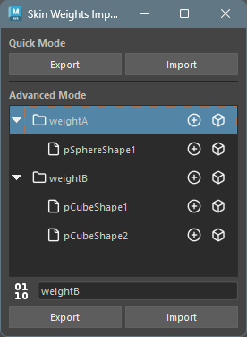
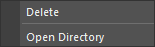

Skin Weights Import/Export
概要
スキンウェイトをファイルに保存し、別のジオメトリにインポートすることができます。 ただし、すでにバインドされているジオメトリにはインポートできません。
起動方法
専用のメニューか、以下のコマンドでツールを起動します。
import faketools.tools.rig.skinWeights_import_export_ui
faketools.tools.rig.skinWeights_import_export_ui.show_ui()
使用方法
一時的にスキンウエイトを保存する場合の Quick Mode と、ファイルに保存する場合の Advanced Mode があります。
エクスポート
- skinCluster でバインドされたジオメトリを選択します ( 複数選択可 )。
- Quick Mode :
Exportボタンを押して、スキンウエイトを保存します。 - Advanced Mode :
ファイルフォーマットを選択し、エクスポートするグループ名（フォルダ名）を入力して、
Exportボタンを押して、スキンウエイトを保存します。
インポート
- Quick Mode :
Importボタンを押して、保存したスキンウエイトを読み込みます。 - Advanced Mode :
リストからインポートするグループかファイルを選択し、
Importボタンを押して、保存したスキンウエイトを読み込みます。
以下の場合は、インポートされません。
- インポートするジオメトリが存在しない場合。
- インポートするインフルエンスが存在しない場合。
- インポートするインフルエンスがバインドされている場合。
インポート時のジオメトリの選択方法
- エクスポート時に選択されていたジオメトリにインポートする場合は、すべての選択を解除してからインポートしてください。シーン上からその名前を検索して対象のジオメトリとします。
- エクスポート時に選択されていたジオメトリ名とは別のジオメトリにインポートする場合は、インポートするジオメトリを選択してからインポートしてください。
ウエイトデータの要素を選択する

Advanced Mode
のウエイトデータのリスト上で、各データの右側のアイコンをクリックするとそのデータの要素を選択できます。
インフルエンスを選択
ジオメトリを選択

オプション
コンテキストメニュー

Quick Mode
の各ボタン上と、Advanced Mode の
ツリービュー上で右クリックすると、コンテキストメニューが表示されます。
- Delete
- 選択したデータを削除します。
- Open Directory
- データが保存されているディレクトリをエクスプローラーで開きます。
ファイルフォーマット
 
Advanced Mode
でエクスポートする際のファイルフォーマットを選択します。ボタンを選択すると、フォーマットが切り替わります。
ファイルを バイナリ形式 (pickle) ( 左 )
で保存するか、テキスト形式 (json) ( 右 )
で保存するかを選択します。